السلسلة 113
السيارة (صنف B) · 25 سؤال بالصوت. حاول تجاوب بوحدك، من بعد شوف الجواب.
السؤال 1

بيّن الجواب
الجواب الصحيح: 3
هذا العلامة ديال خطركتعلم على :
- خطر ملتقى طرق على بعد 150 متر.(خارج التجمع السكني)
- طريق كبيرة في صغيرة .يعني انا لي عندي حق الأسبقية في هذا ملتقى الطرق.
- حيت كاين خطر ،واجب عليا ننقص من السرعة.
السؤال 2
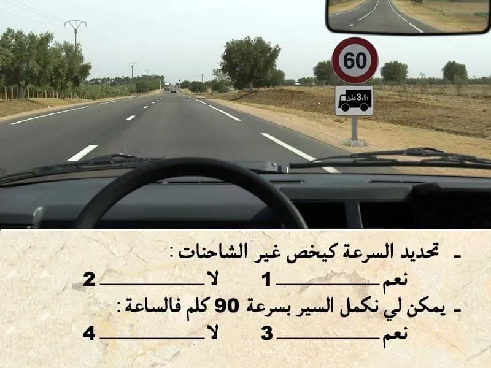
بيّن الجواب
الجواب الصحيح: 1 و 3
هذا العلامة ديال المنع. "تحديد السرعة"
كتعلم على انه ممنوع السير بأكثر من 60 كلم في الساعة.
✅ العلامة التكميلية كتعلم بلي المنع كيخص الشاحنات. و بالتالي ما كتعنينيش.
💥 و بالتالي يمكن لي نكمل السير ب 90 كلم في الساعة.
السؤال 3
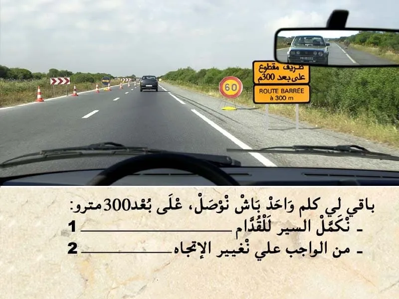
بيّن الجواب
الجواب الصحيح: 2
هذا العلامة ديال الإرشاد. باللون الأصفر. "تشوير مؤقت"
- كتعلم على طريق مقطوع على بعد 300 متر .
كيعني ممنوع عليا نكمل السير للقدام و واجب عليا نغير الإتجاه.
السؤال 4
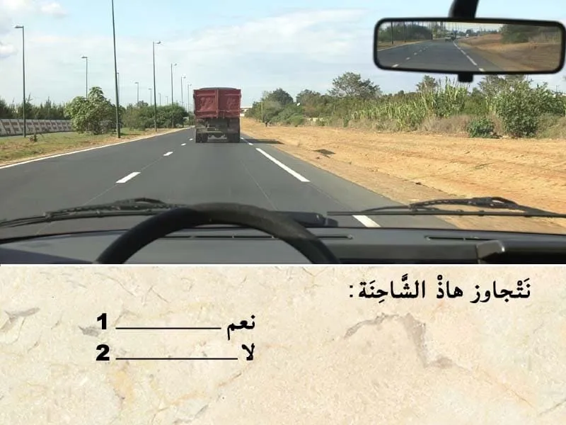
بيّن الجواب
الجواب الصحيح: 1
قبل التجاوز . واجب عليا نراقب، تم نبه، تم ننحاز.
في هذا الحالة الطريق خاوية وراية ما كاينش حتى شي حد جاي وراية و اعلم بلي غادي يتجاوز .
- الطريق قبالتي خاوية " طريق عندو إتجاه وحيد " و بالتالي يمكن لي نتجاوز.
السؤال 5
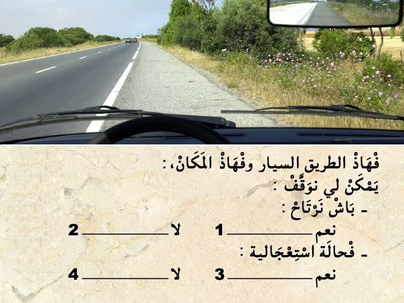
بيّن الجواب
الجواب الصحيح: 2 و 3
هذا الطريق هي طريق سيار.
و هذا المسلك هو مسلك ديال الوقوف الاستعجالي.
و بالتالي ما يمكنش لي نتوقف الا في حالة استعجالية.
السؤال 6
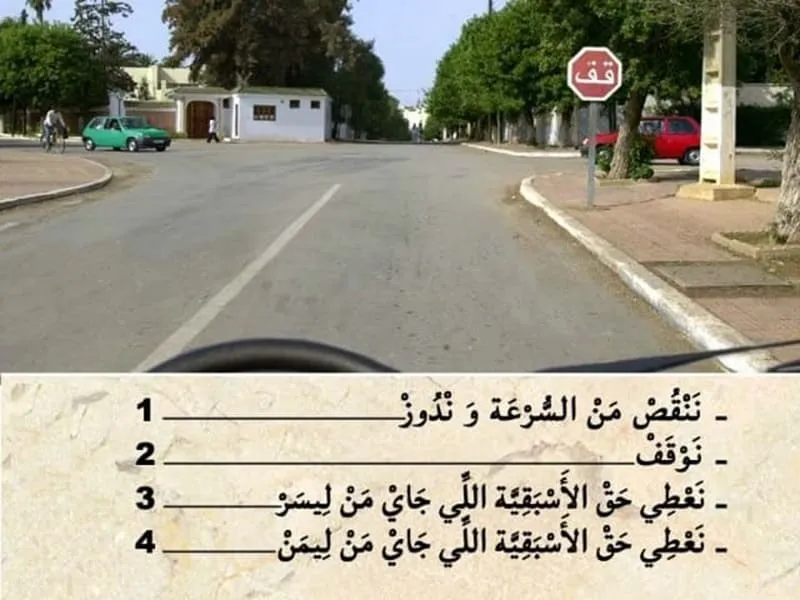
بيّن الجواب
الجواب الصحيح: 2 و 3 و 4
في هذا الحالة. عندي علامة قف .
- كتعلم بلي واجب عليا نوقف و نعطي حق الأسبقية للي جاي من ليمن و للي جاي من ليسر.
⛔ ما يمكنش ننقص من السرعة و ندوز .
✅ واجب عليا نوقف . تم نعطي حق الأسبقية في حالة كانت شي سيارة جاية من ليمن او ليسر عاد ندوز .
السؤال 7
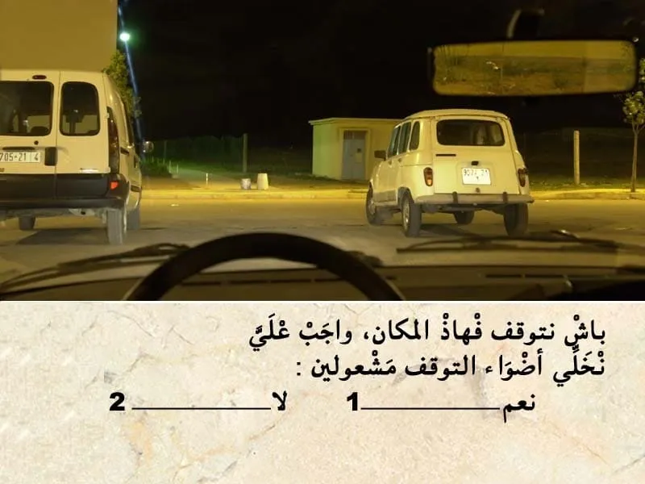
بيّن الجواب
الجواب الصحيح: 2
باش نتوقف في هذا مكان التوقف . كاين إنارة عمومية و بالتالي يمكن لي نتوقف بلا ما نستعمل اضواء التوقف.
السؤال 8
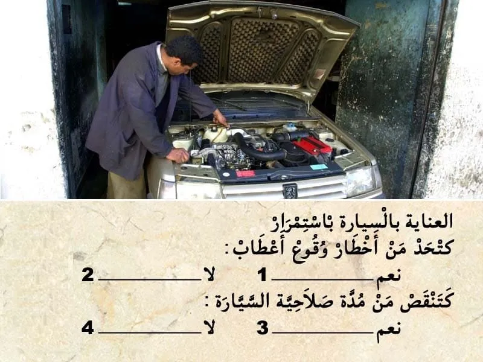
بيّن الجواب
الجواب الصحيح: 1 و 4
العنايه بالسيارة باستمرار.
كتحد من اخطار وقوع أعطاب و و بالعكس كتزيد من مدة صلاحية السيارة.
السؤال 9
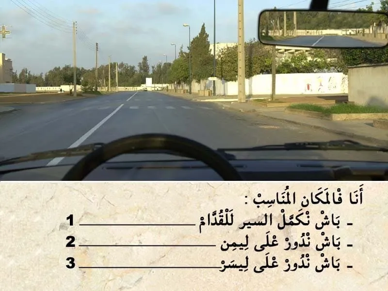
بيّن الجواب
الجواب الصحيح: 3
في هذا الوضعية الطريق فيها مسلك وحيد للسير . و انا شاد ليسر ديال المسلك .
في السير العادي خصني نكون شاد ليمن ديال المسلك .
و في هذا ملتقى الطرق و بهذا الوضعية انا في المكان المناسب باش ندور على ليسر.
السؤال 10
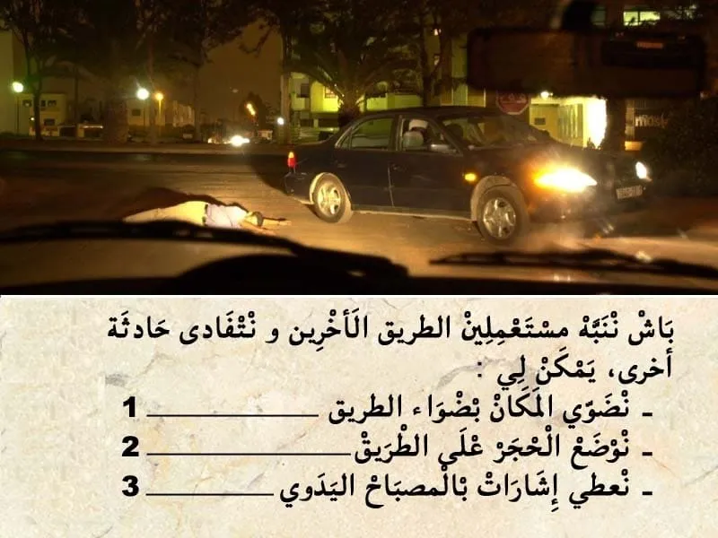
بيّن الجواب
الجواب الصحيح: 1 و 3
🚩 حماية مكان الحادثة والإشارة إليه:
تتم عملية حماية المكان والإشارة إليه عن طريق:
⚠ وضع مثلث العطب؛
🔦 الإشارة بمصباح الجيب؛
💡 تشغيل أضواء الاستغاثة (أضواء النجدة)؛
🔆 استعمال أضواء الطريق ( خلال الليل أو في حالة ضعف الإضاءة).
السؤال 11

بيّن الجواب
الجواب الصحيح: 2
الأطفال الأقل من 10 سنوات من الواجب يركبوا في المقاعد الخلفية للسيارة .و اركابهم في المقاعد الأمامية كتعتبر مخالفة.
السؤال 12
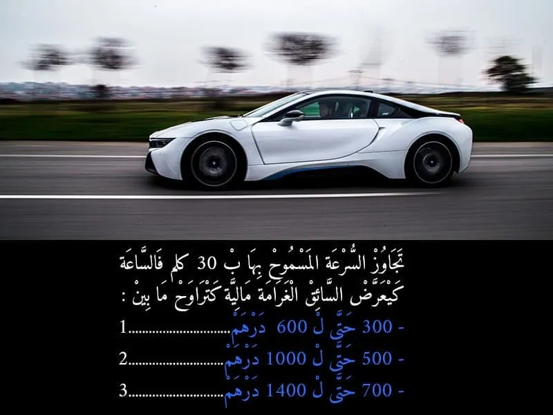
بيّن الجواب
الجواب الصحيح: 3
🚨🚨 سؤال تم تصحيحه نتيجة للتعديل الاخير في المخالفات.
- تجاوز السرعة ب 30 كلم في الساعة كتعتبر مخالفة من الدرجة الأولى و كتعرض السائق لغرامة مالية من 700 حتى ل 1400 درهم .
- و كتعرض السائق لسحب 2 نقاط من رصيد رخصة السياقة .
-🚨هنا التغيير فقط في عدد النقط المسحوبة . فقط بالنسبة للسرعة الا كانت 30 كلم في الساعه. اما اكثر من 30 كلم فالساعة كيتم سحب 4 ديال النقط.
السؤال 13
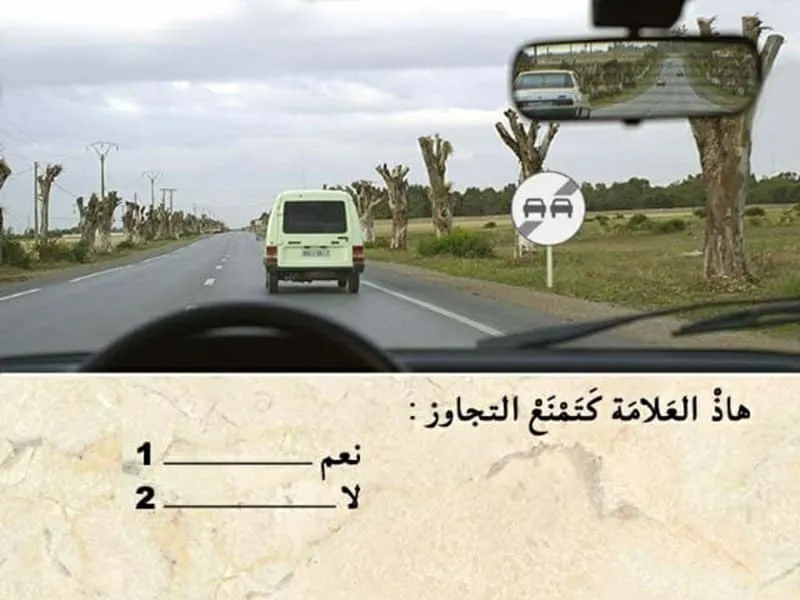
بيّن الجواب
الجواب الصحيح: 2
هذا العلامة ديال نهاية المنع .
- كتعلم على نهاية منع التجاوز .
ابتداء من العلامة يمكن لي نتجاوز .
⛔ نهاية المنع و بداية المنع .
السؤال 14
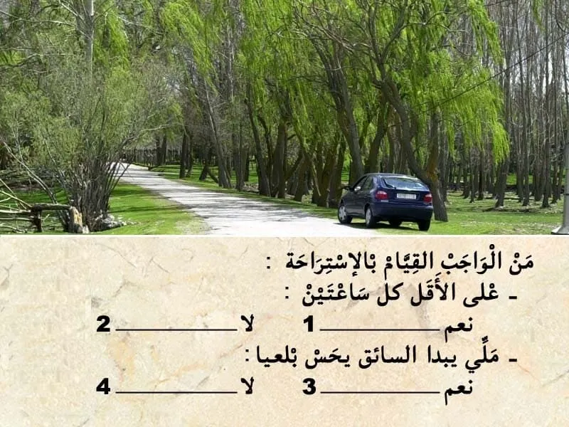
بيّن الجواب
الجواب الصحيح: 1 و 3
كتعتبر مخالفة عدم احترام الفترة الزمنية ديال السياقة و عدم القيام بالاستراحة.
و من الواجب القيام ب استراحة كل ساعتين .
و ايضا بمجرد ما يبدا يحس بالعياء.
السؤال 15

بيّن الجواب
الجواب الصحيح: 1
في هذه الحالة كنسير في طريق غير معبدة و قدامي منعرج و بالتالي كاين احتمال ديال انزلاق المركبة في المنعرج نظرا لوجود الحصى على الطريق.
و بالتالي من الواجب عليا ننقص من السرعة.
السؤال 16
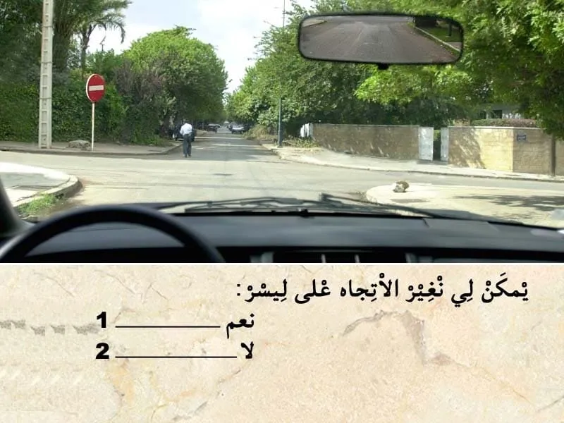
بيّن الجواب
الجواب الصحيح: 2
هذا العلامة ديال المنع.
كتعلم بلي المرور ممنوع على ليسر .
و بالتالي ما يمكنش ليا ندور على ليسر.
السؤال 17

بيّن الجواب
الجواب الصحيح: 2
التشوير الطرقي كيضم علامة ديال الخطر .
- كتعلم على اشغال على الطريق.
انا غادي ب 60 كلم في الساعة. عندي خطر زائد تحديد السرعة في 40 كلم في الساعة.
و بالتالي من الواجب عليا ننقص من السرعة .
السؤال 18
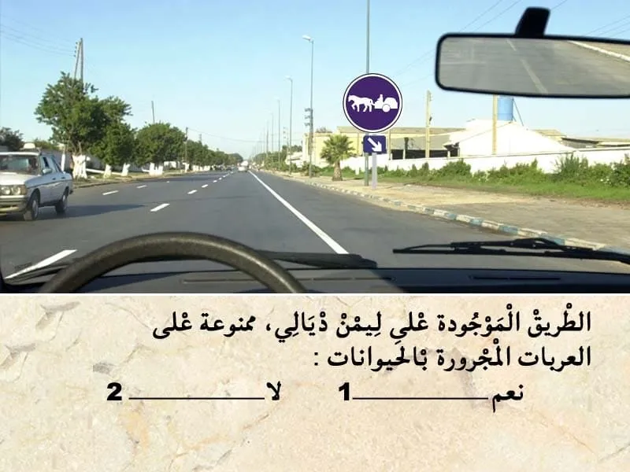
بيّن الجواب
الجواب الصحيح: 2
هذا العلامة ديال الاجبار.
- كتعلم بلي المسلك لي اقصى اليمين خاص و إجباري للعربات المجرورة بواسطة حيوانات.
⛔ هنا رد البال، مسلك خاص و ليس ممنوع على العربات المجرورة بواسطة حيوانات.
السؤال 19

بيّن الجواب
الجواب الصحيح: 2
التشوير الطرقي كيضم علامة ديال الإرشاد.
فوق منها أرقام باللون الاصفر . كيعني انه تبعت هذا الإتجاه غادي نكون في طريق جهوية.
السؤال 20
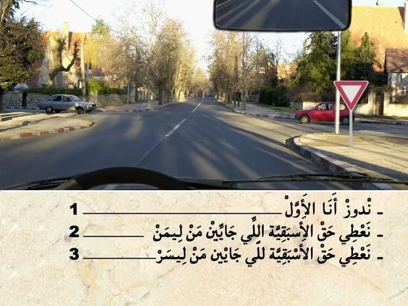
بيّن الجواب
الجواب الصحيح: 2 و 3
هذا العلامة ديال اعطاء حق الأسبقية. كتعلم بلي واجب عليا نعطي حق الأسبقية في هذا ملتقى الطرق .
✏️ و بالتالي واجب عليا نعطي حق الأسبقية للي جاي من جهت ليمن .
✏️و للي جاي من جهت ليسر .
و حتى للي جاي في الإتجاه المعاكس في حالة كنت غادي ندور على ليسر.
السؤال 21

بيّن الجواب
الجواب الصحيح: 2
عند شراء سيارة مستعملة من الواجب طلب بطاقة رمادية جديدة لسيارتي في الاسم ديالي .
السؤال 22
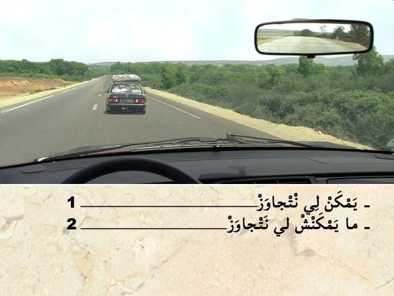
بيّن الجواب
الجواب الصحيح: 1
قبل التجاوز . واجب عليا نراقب، تم نبه، تم ننحاز.
في هذا الحالة الطريق خاوية وراية ما كاينش حتى شي حد جاي وراية و اعلم بلي غادي يتجاوز .
- الطريق قبالتي خاوية و بالتالي يمكن لي نتجاوز.
السؤال 23
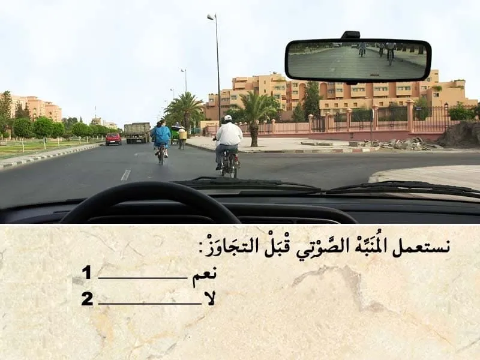
بيّن الجواب
الجواب الصحيح: 2
✍ يتم استعمال المنبه الصوتي عند التقابل/تجاوز سائقي الدراجات حسب الحالة ꓽ
✅ داخل التجمعات السكنيةꓽ لا يجب استعمال المنبه الصوتي (سواء في حالة التجاوز أو في حالة الرغبة في إشعار سائق الدراجة بوجودك) إذا كان سائق الدراجة يسير في شريط الدراجات أو إذا كان يسير في أقصى اليمين.
💡 يسمح باستعمال المنبه الصوتي في حالة الخطر فقط.
✅ خارج التجمعات السكنيةꓽ عند الاقتراب من سائق دراجة خارج التجمعات السكنية وخاصة في المناطق الجبلية، يمكن استعمال المنبه الصوتي لإشعاره بمرورك.
السؤال 24
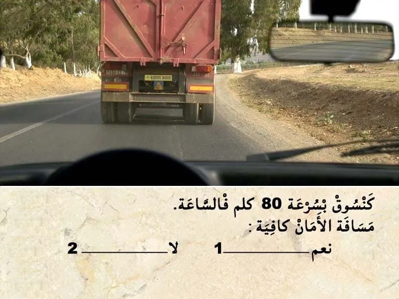
بيّن الجواب
الجواب الصحيح: 2
بسرعة 80 كلم فالساعة.
من خلال الوضعية يتضح أن مسافة الأمان غير كافية.
السؤال 25
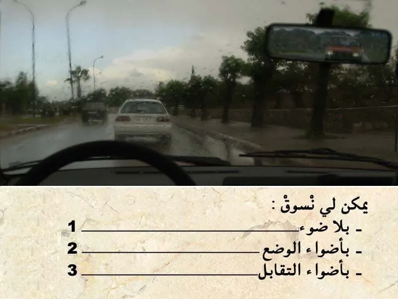
بيّن الجواب
الجواب الصحيح: 2 و 3
في هذا الحالة كاين الشتاء و التالي من الواجب عليا نشغل الاضواء باش نكون واضح للأخرين .
في حالة الضبابة يمكن ليا نمشي :
-- بأضواء الوضع.
-- أضواء التقابل .
-- أضواء الضبابة ديال القدام .
و ما يمكنش ليا نمشي يلا أضواء.